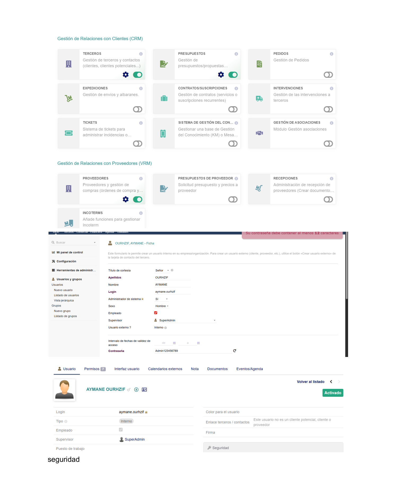
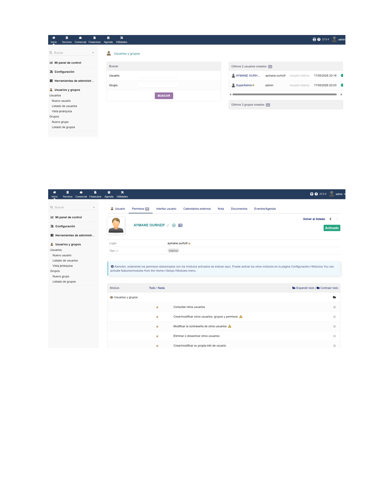
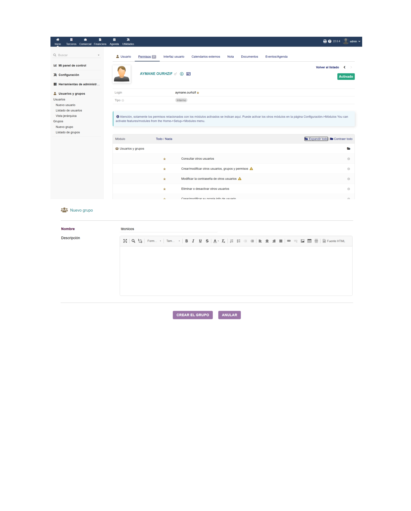
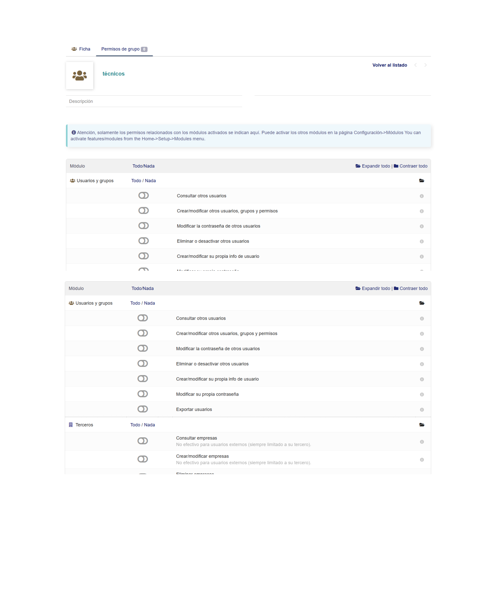
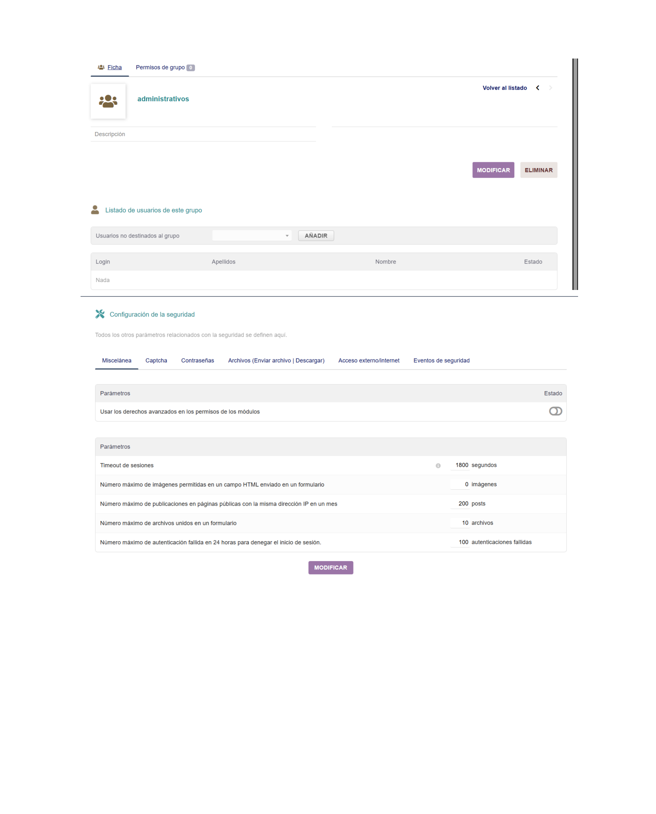

Roles, permisos, grupos y configuración de seguridad en Dolibarr
Un SGE maneja datos sensibles: clientes, facturas, nóminas, contraseñas... Por eso es fundamental controlar exactamente quién accede a qué. Dolibarr implementa un sistema de usuarios, grupos y permisos granulares que permite seguir el principio de mínimo privilegio: cada usuario solo ve y modifica lo que necesita para su trabajo.
Dolibarr exige usuario y contraseña para acceder. En la pantalla de login vista en la instalación se introduce el usuario admin con la contraseña establecida. Dolibarr guarda las contraseñas cifradas.
Los módulos activos en el sistema son los que se muestran en la pantalla de configuración. Al activar el módulo Terceros y Presupuestos ya aparecen con el engranaje ⚙️ indicando que están operativos. Para crear un usuario nuevo hay que ir a Herramientas de administración → Usuarios y grupos → Nuevo usuario.

Al crear un usuario en Dolibarr se rellenan los siguientes campos:
La lista de usuarios y grupos muestra todos los usuarios creados con su login, tipo y fecha de creación. En la pestaña Permisos se puede ver y modificar qué acciones puede realizar cada usuario en cada módulo.

Los grupos permiten asignar permisos a varios usuarios a la vez. En el ejemplo se crean los grupos técnicos y administrativos. Para crear un grupo nuevo se accede a Usuarios y grupos → Nuevo grupo y se escribe el nombre.
En la pestaña Permisos de grupo se activan o desactivan los permisos que tendrán todos los miembros del grupo. Por ejemplo, el grupo "técnicos" puede tener permiso para consultar usuarios pero no para crear/modificar otros usuarios ni cambiar contraseñas.

En la vista de Permisos de grupo se ven todos los permisos disponibles organizados por módulo. Cada permiso se puede activar o dejar desactivado de forma individual. Para el grupo técnicos los permisos del módulo "Usuarios y grupos" están todos desactivados (interruptores en gris), mientras que para Terceros se pueden activar permisos de consulta, creación o eliminación.

En Configuración → Seguridad se encuentran parámetros avanzados del sistema organizados en varias pestañas:
Timeout de sesiones (1800 segundos por defecto), número máximo de imágenes en formularios, máximo de publicaciones por IP al mes (200), máximo de archivos por formulario (10) y número máximo de intentos de login fallidos (100).
Longitud mínima y complejidad exigida. En el ejemplo se ve el aviso de que "Su contraseña debe contener al menos 12 caracteres".
Control sobre qué archivos se pueden enviar o descargar desde el sistema.
Parámetros para controlar el acceso desde fuera de la red local.
